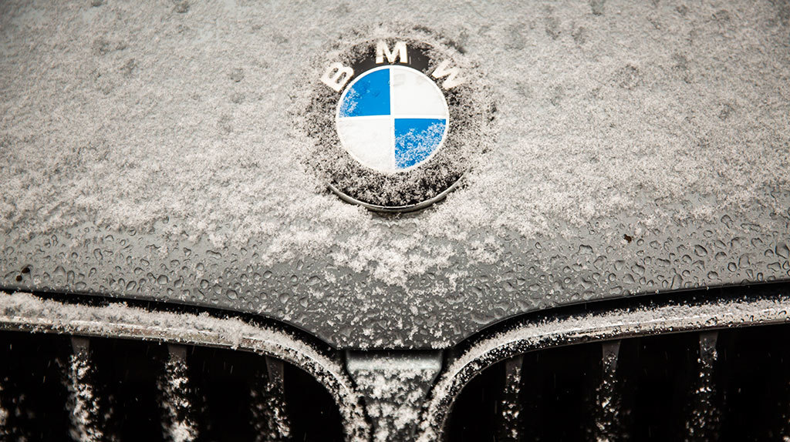

Немецкий производитель автомобилей, мотоциклов, двигателей, а также велосипедов. Более 45 % акций принадлежит семье Квандт. Председателем правления компании является Оливер Ципсе. Главный дизайнер — Йозеф Кабан. Девиз компании — «Freude am Fahren», с нем. — «С удовольствием за рулём». Для англоязычных стран был придуман также девиз «The Ultimate Driving Machine» (с англ. — «Идеальная машина для вождения»). Концерн BMW Group, в который входят бренды BMW, Mini, Rolls-Royce и BMW Motorrad, является ведущим мировым производителем автомобилей и мотоциклов, а также поставщиком финансовых услуг и услуг по обеспечению мобильности премиум-класса. Штат компании насчитывает порядка 125 000 сотрудников в подразделениях по всему миру.

Успех BMW Group всегда основывался на долгосрочном планировании и ответственном ведении бизнеса. Мы достигли экологической и социальной устойчивости на всех этапах прибавления ценности за счет комплексного и ответственного подхода к обеспечению качества продукции и мер по сохранению ресурсов, что является неотъемлемой частью нашей стратегии.Создание новых направлений, долгосрочное планирование и поиск новых возможностей — вот что обеспечивает развитие BMW Group. Именно поэтому мы ищем сотрудников, которые заряжают окружающих командным духом и новыми идеями, а также желанием постоянно осваивать что-то новое. Хотели бы вы поделиться своим энтузиазмом и начать свою карьеру в компании BMW Group? Ознакомьтесь с нашими текущими вакансиями и условиями работы по всему миру.